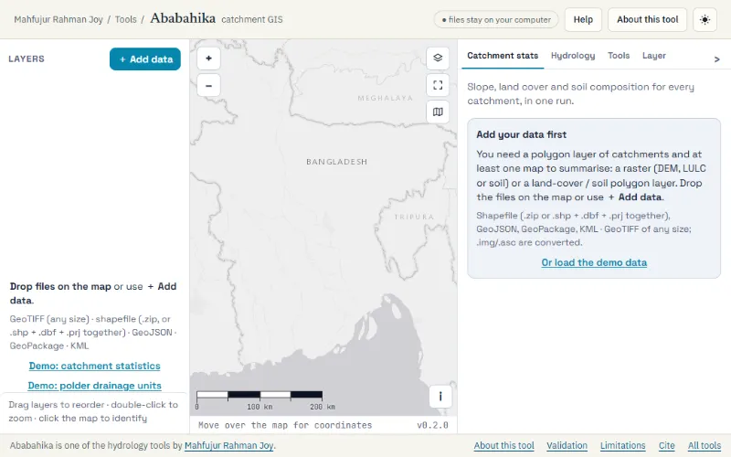

Modelling & Spatial · Beta · version 0.2.0
About Ababahika
Ababahika (অববাহিকা) is Bangla for catchment.
Catchment slope, land cover, soil & drainage units — a GIS in your browser

What it does
Load a DEM, a land-cover map, a soil map and your catchments, and get slope statistics and slope classes plus the area and percentage of every land-cover and soil class for each catchment, with an Excel workbook and a methods paragraph. Delineate drainage units from a DEM, even in polders: embankments act as walls, sluices as outlets and khals are burned in, and every unit reports how much of it is flat or filled. A map with layers, symbology and identify, and GDAL tools to project, clip, merge, dissolve and export. GeoTIFFs of any size are streamed, never uploaded.
- Slope per catchment: mean, median, P10–P90, classes (Horn, as ArcGIS)
- Land cover and soil (raster or polygons): area and % per catchment
- Drainage units by D8 with embankments as walls, sluices as outlets, khals burned in
- Flow direction, accumulation and filled DEM as GeoTIFF; validated against pysheds
- Streams GeoTIFFs of any size; geographic DEMs handled exactly
- Project, clip, merge, dissolve, slope raster with real GDAL (WebAssembly)
- Export shapefile, GeoPackage, GeoJSON, KML in any CRS; Excel and methods text
Problem
Slope, land-cover and soil-texture statistics for every catchment, with a map and basic geoprocessing. Runs entirely in the browser; files are never uploaded.
Method
- Cell-in-polygon: cell centre inside (GDAL rasterize scanline rule; same as rasterio/rasterstats all_touched=False and ArcGIS Zonal Statistics). Holes and multipart polygons handled.
- Polygons are reprojected to the raster CRS (proj4js); rasters are never resampled for statistics.
- Slope: Horn (1981), NoData neighbours replaced by the centre value (ArcGIS rule), edges replicated. Geographic DEMs: per-row metre spacing from WGS 84 radii of curvature.
- Areas: projected cells |Δx·Δy|; geographic cells exact ellipsoidal area; catchment areas geodesic (WGS 84, local Lambert equal-area); polygon-on-polygon (soil) areas in the catchment's UTM zone.
- Hydrology (D8): DEM at its own or a coarser cell size; embankments burned in as walls (4-connected), sluices/regulators as openings and outlets, khals burned in as channels (shapefile or drawn on the map); Priority-Flood filling (Barnes et al. 2014, +ε for flats); D8 flow direction (ESRI codes 1–128); flow accumulation; stream network with Strahler order; drainage units per sluice, or per clicked/loaded pour point snapped to the largest flow.
- Tools (GDAL 3 in WebAssembly): project raster, clip raster (polygons or map view), merge/mosaic rasters, slope raster, clip vector, merge vectors, dissolve, export vector (shapefile, GeoPackage, GeoJSON, KML, CSV) in any coordinate system.
References used by the tool
- Horn, B.K.P. (1981). Hill shading and the reflectance map. Proceedings of the IEEE, 69(1), 14–47.
- Strahler, A.N. (1952). Hypsometric (area-altitude) analysis of erosional topography. GSA Bulletin, 63, 1117–1142.
Data
Drop files on the map or press ＋ Add data. Shapefiles: a .zip, or select the .shp, .dbf and .prj together. Rasters: GeoTIFF of any size (read in pieces, never loaded whole); .img, .asc and others are converted with GDAL. Demo data: 'Demo: catchment statistics' and 'Demo: polder drainage units' (tools/ababahika/data/demo/).
Bundled sample data
- In-app button 'Demo: catchment statistics' — catchments (zipped shapefile)
- In-app button 'Demo: catchment statistics' — DEM (GeoTIFF)
- In-app button 'Demo: catchment statistics' — land cover (GeoTIFF, demo classes)
- In-app button 'Demo: catchment statistics' — soil polygons (zipped shapefile)
- In-app button 'Demo: polder drainage units' — polder DEM (GeoTIFF)
- In-app button 'Demo: polder drainage units' — embankment (GeoJSON)
- In-app button 'Demo: polder drainage units' — sluices (GeoJSON)
- In-app button 'Demo: polder drainage units' — khals (GeoJSON)
Validation
- Reference implementations: rasterio 1.4 (geometry_mask, all_touched=False), NumPy Horn slope, shapely 2 intersections, pyproj Geod areas. Synthetic data from tests/make_data.py (seeded).
- tests/zonal.test.mjs: 183/183 checks — identical cell counts, slope statistics to 1e-9°, class areas to 1e-6 m², soil overlay areas to 0.02 %, geodesic areas to 0.01 %.
- tests/hydro.test.mjs (tests/make_hydro.py): 22/22 — exact fill identical to pysheds fill_depressions (3 926 raised cells); D8 identical to an independent NumPy D8 on every interior cell (pysheds 0.5 flowdir is unreliable under NumPy 2); flow accumulation identical to pysheds accumulation from the same directions; catchments identical to pysheds catchment.
- tests/slope.test.mjs: slope rasters vs NumPy Horn, max difference 1e-6° (float32), identical NoData mask and georeferencing.
- Demo polder (2 sluices): units 21.78 + 21.64 km² vs polder polygon 43.38 km².
- Not yet validated: real Bangladeshi DEMs (SRTM/ALOS/FABDEM) against ArcGIS Pro outputs — recommended before first use in a report.
Limitations
- D8 on a DEM alone is unreliable in floodplains and polders. Burn in embankments, sluices and khals, prefer a bare-earth DEM (survey/LiDAR, FABDEM), and read each unit's Flat % (cells with no lower neighbour) and Filled % (cells raised by depression filling): where they are high, the boundary was set by the filling algorithm, not the terrain.
- GDAL tools copy inputs into memory: inputs + outputs must fit in roughly 2 GB.
- Slope raster: up to 250 million cells (uncompressed output).
- Hydrology holds the whole grid in memory: up to 40 million cells (e.g. 6 300 × 6 300; 190 km square at 30 m). Use a coarser cell size or clip the DEM for larger areas.
- Not yet validated: real Bangladeshi DEMs (SRTM/ALOS/FABDEM) against ArcGIS Pro outputs — recommended before first use in a report.
How to cite
Joy, Mahfujur Rahman (2026). Ababahika: catchment slope, land-cover and soil statistics in the browser (version 0.2.0, released 2026-11-04).
Source and documents
- README
- Validation
- Citation (CFF)
- Licence
- Licence: MIT